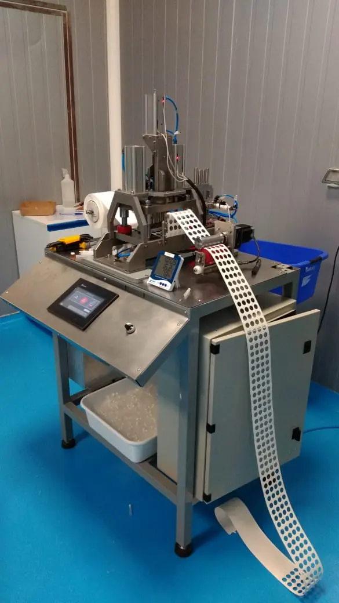
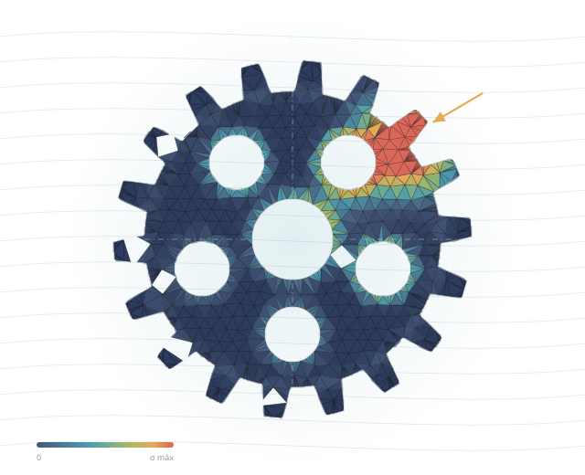
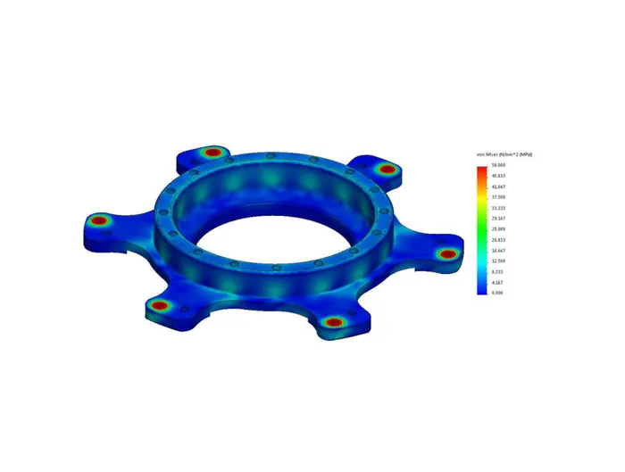
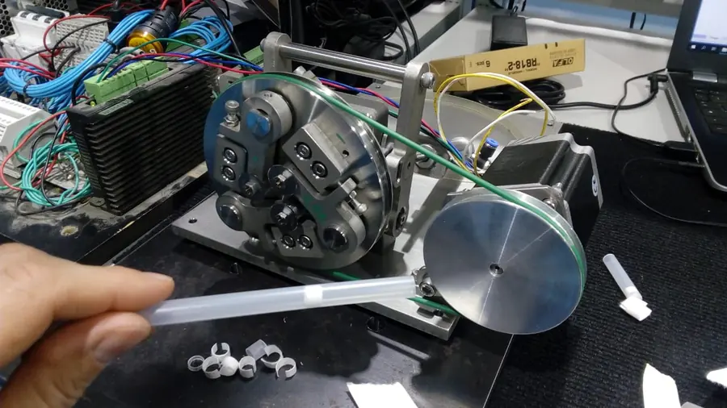

Diseño mecánico y de máquinas
Modelado 3D de piezas, conjuntos y estructuras. Planos de fabricación y montaje, listas de materiales y archivos DXF/DWG.
Ingeniería mecánica · Simulación · Desarrollo de equipos
Diseñamos, calculamos y documentamos equipos industriales, estructuras y máquinas especiales. Validamos con simulación FEM/CFD antes de fabricar.
Contanos tu proyecto Ver trabajos
20 años de experiencia en diseño industrial

Qué hacemos

Modelado 3D de piezas, conjuntos y estructuras. Planos de fabricación y montaje, listas de materiales y archivos DXF/DWG.

Análisis estructural y térmico, y dinámica de fluidos. Verificamos resistencia y deformaciones antes de fabricar.

Del concepto al prototipo funcional: ensayo, ajuste y puesta a punto junto a producción.
Estructuras metálicas, shelters, skids y plataformas, con cálculo estructural según normativa.
Fotogrametría aérea, relevamientos topográficos y replanteos con GNSS RTK.
Recorrido del diseño en realidad virtual para revisar montaje y mantenimiento a escala real. Ver videos →
Portfolio
Una selección de equipos diseñados por i4d. Tocá una imagen para verla en grande. Descargar portfolio completo (PDF, 3,7 MB) ↓
Cargador inclinado sobre ruedas, desde el modelo 3D hasta el equipo fabricado.
Máquina de línea de producción con bastidor soldado y accionamientos eléctricos.
Pluma giratoria verificada con simulación FEM de desplazamientos.
Diseño y cálculo estructural para izaje y servicio, según CIRSOC.
Equipo de bobinado con bastidor estructural, motorreductor y mecanismos de guiado.
Plataformas de acceso con piso de rejilla y barandas.
Carros de traslación sobre riel con accionamiento propio.
Conjunto mecánico de guiado para línea de laminación.
Equipo para girar y volcar cajas, con bastidor soldado y motorreductor.
Soporte con motorreductor para el manejo de bobinas de chapa.
Mecanismo de ajuste con husillos y garras, fabricado en taller.
Cama de rodillos sobre bastidor soldado y guía de rodillos para alambre.
Dispositivo con bastidor soldado y husillos para el montaje de anillos.
Estructuras soldadas de taller, desde el bastidor en fabricación hasta la mesa terminada.
Realidad virtual
En algunos proyectos llevamos el modelo 3D a realidad virtual. Así se revisan a escala real el montaje, los accesos y el mantenimiento, y se detectan problemas antes de fabricar.
Simulación en tiempo real
Además del diseño, armamos simuladores interactivos de mecanismos a partir del modelo 3D. Se ajustan los parámetros (motor, transmisión, cargas, tipo de arranque) y se ve en tiempo real cómo responde el equipo: velocidades, pares, corrientes y fuerzas en la transmisión. Sirven para validar el dimensionamiento y comparar alternativas con el cliente.
Contacto
Te respondemos en 24 horas hábiles.